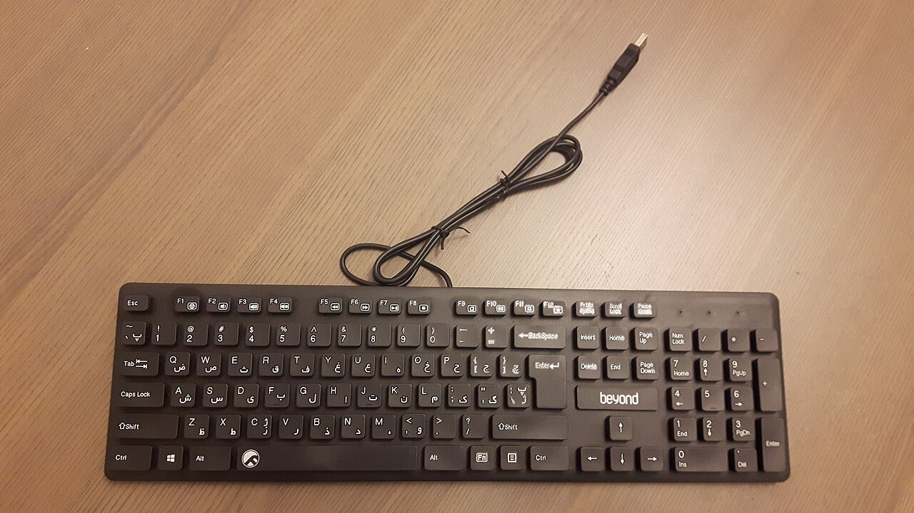

<!-- HMD-005 · deck source. Build: make decks  →  deck-fa.html + deck-en.html
     Every visible string is a pair <t-fa>…</t-fa><t-en>…</t-en>; text outside a pair is shown in both decks. -->

<style>
/* HMD-005: real photo (beat 10) and the before→after cards (beat 8) */
.photo{display:block;margin:0}
.photo img{display:block;border-radius:4px}
.photo.strip img{height:124px;width:100%;object-fit:cover;object-position:50% 78%}
.photo figcaption{margin-top:8px;font-size:20px;line-height:1.35;color:var(--muted)}
.cols.pairs b{font-size:72px;white-space:nowrap}
.cols.pairs p{font-size:22px;line-height:1.4}
</style>

<section class="cover">
<h1><t-fa>چرا نوشتن فارسی برای بعضی AIها <em>توکن بیشتری</em> می‌برد؟</t-fa><t-en>Why does Persian cost <em>more tokens</em> for some AI models?</t-en></h1>
<p class="promise"><t-fa>پنجاه جفت جملهٔ هم‌معنی، فارسی و انگلیسی، شمرده‌شده با نُه توکن‌ساز واقعی.</t-fa><t-en>Fifty matching sentence pairs, Persian and English, counted by nine real tokenizers.</t-en></p>
</section>

<section class="frame night" id="beat-1" data-start="0">
<h1><t-fa>حرف کمتر. <em>توکن</em> بیشتر.</t-fa><t-en>Fewer letters. More <em>tokens</em>.</t-en></h1>
<div class="cols">
<div><span><t-fa>تعداد حرف · فارسی ÷ انگلیسی (میانه)</t-fa><t-en>Characters · fa ÷ en (median)</t-en></span><b><t-fa>۰٫۸۸<small>×</small></t-fa><t-en>0.88<small>×</small></t-en></b><p><t-fa>فارسی کوتاه‌تر نوشته می‌شود…</t-fa><t-en>Persian is written shorter…</t-en></p></div>
<div class="hi"><span><t-fa>تعداد توکن · فارسی ÷ انگلیسی (میانه، ۹ توکن‌ساز)</t-fa><t-en>Tokens · fa ÷ en (median, 9 tokenizers)</t-en></span><b><t-fa>۱٫۲۱ تا ۴٫۶۱<small>×</small></t-fa><t-en>1.21–4.61<small>×</small></t-en></b><p><t-fa>…ولی بلندتر شمرده می‌شود.</t-fa><t-en>…but counted longer.</t-en></p></div>
</div>
<p class="tag"><t-fa>۵۰ جفت جملهٔ خودنوشته · اندازه‌گیری ۲ نوامبر ۲۰۲۶ · tiktoken 0.9.0 · transformers 4.49.0</t-fa><t-en>50 self-written pairs · measured 2 Nov 2026 · tiktoken 0.9.0 · transformers 4.49.0</t-en></p>
<footer><t-fa>اجرای HMD-005 · artifact/results-2026-11-02.md</t-fa><t-en>HMD-005 run · artifact/results-2026-11-02.md</t-en></footer>
<aside class="notes"><t-fa><b>کوتاه‌تر می‌نویسیم، بلندتر حساب می‌شود</b><p>[B-ROLL CUE] دو پیام کنار هم با شمارندهٔ حرف و توکن. Grab ← Promise ← Stakes ← sting. پایان قاب: کاور.</p><p>در یک جمله: فارسی کوتاه‌تر نوشته می‌شود، ولی بیشتر وقت‌ها بلندتر شمرده می‌شود.</p></t-fa><t-en><b>We write shorter, it is counted longer</b><p>[B-ROLL CUE] Two messages side by side with letter and token counters. Grab → Promise → Stakes → sting. End of beat: the cover.</p><p>In one line: Persian is written shorter but is usually counted longer.</p></t-en></aside>
</section>

<section class="frame paper" id="beat-2" data-start="40">
<p class="kicker"><t-fa>چرا به تو مربوط است</t-fa><t-en>Why it matters to you</t-en></p>
<h1><t-fa>پولی که می‌دهی برای حرف نیست؛ برای <em>توکن</em> است.</t-fa><t-en>What you pay for is not letters. It is <em>tokens</em>.</t-en></h1>
<div class="steps">
<div><b><t-fa>۱</t-fa><t-en>1</t-en></b><t-fa>توکن چیست؛ ببینیمش.</t-fa><t-en>What a token is: see it.</t-en></div>
<div><b><t-fa>۲</t-fa><t-en>2</t-en></b><t-fa>فارسی در برابر انگلیسی، روی ۹ توکن‌ساز واقعی.</t-fa><t-en>Persian vs English on 9 real tokenizers.</t-en></div>
<div class="hi"><b><t-fa>۳</t-fa><t-en>3</t-en></b><t-fa>کدام عادت تایپی این عدد را جابه‌جا می‌کند.</t-fa><t-en>Which typing habit moves the number.</t-en></div>
</div>
<p class="caption"><t-fa>حدس بزن: فارسی چند برابر انگلیسی؟ ۱٫۵؟ ۲؟ ۳؟</t-fa><t-en>Guess: how many times the English count is the Persian? 1.5? 2? 3?</t-en></p>
<footer><t-fa>هومودین</t-fa><t-en>Homodyne</t-en></footer>
<aside class="notes"><t-fa><b>چرا به تو مربوط است</b><p>[CAMERA CHANGE] مثال قرارداد اجارهٔ بیست صفحه‌ای و چت‌بات پشتیبانی.</p><p>در یک جمله: سقف متن و هزینهٔ AI با توکن حساب می‌شود، نه با حرف.</p></t-fa><t-en><b>Why it matters to you</b><p>[CAMERA CHANGE] The example of a twenty-page lease and a support chatbot.</p><p>In one line: an AI's text limit and cost are counted in tokens, not letters.</p></t-en></aside>
</section>

<section class="frame paper" id="beat-3" data-start="95">
<p class="kicker"><t-fa>توکن چیست؟ اول انگلیسی</t-fa><t-en>What is a token? English first</t-en></p>
<h1><t-fa>یک جملهٔ انگلیسی = <em>۱۵</em> توکن</t-fa><t-en>One English sentence = <em>15</em> tokens</t-en></h1>
<div class="tokens" dir="ltr"><i>I</i><i>want</i><i>to</i><i>cancel</i><i>my</i><i class="hi">subscription</i><i>and</i><i>get</i><i>a</i><i>refund</i><i>for</i><i>the</i><i>last</i><i>month</i><i>.</i></div>
<p class="tag"><t-fa>o200k_base · هر جعبه = یک توکن · تکه‌های پرتکرار یک جعبه می‌گیرند</t-fa><t-en>o200k_base · each box = one token · frequent chunks get one box</t-en></p>
<footer><t-fa>اجرای HMD-005 · artifact/results-2026-11-02.md</t-fa><t-en>HMD-005 run · artifact/results-2026-11-02.md</t-en></footer>
<aside class="notes"><t-fa><b>توکن چیست؟ اول انگلیسی</b><p>[GRAPHIC] پازل توکن. «subscription» یک تکه.</p><p>در یک جمله: توکن تکه‌ای از متن است و تکه‌های پرتکرار بزرگ‌ترند.</p></t-fa><t-en><b>What is a token? English first</b><p>[GRAPHIC] Token puzzle. "subscription" is one piece.</p><p>In one line: a token is a chunk of text, and frequent chunks are bigger.</p></t-en></aside>
</section>

<section class="frame paper" id="beat-4" data-start="140">
<p class="kicker"><t-fa>اول حدس بزن</t-fa><t-en>Guess first</t-en></p>
<h1><t-fa>همان جمله به فارسی: ۲۲، ۴۶ و ۶۹ توکن</t-fa><t-en>Same sentence in Persian: 22 · 46 · 69 tokens</t-en></h1>
<div class="tokens" dir="rtl" lang="fa"><i>می</i><i>ZWNJ·</i><i>خوا</i><i>هم</i><i>اشت</i><i>را</i><i>کم</i><i>را</i><i>لغ</i><i>و</i><i>کنم</i><i>و</i><i>هزینه</i><i>ZWNJ·ی</i><i>ماه</i><i>آخر</i><i>را</i><i>پس</i><i>ب</i><i>گیر</i><i>م</i><i>.</i></div>
<div class="bars tight">
<div><span><t-fa>انگلیسی</t-fa><t-en>English</t-en></span><i style="--v:21.7"></i><span><t-fa>۱۵</t-fa><t-en>15</t-en></span></div>
<div><span>o200k_base</span><i style="--v:31.9"></i><span><t-fa>۲۲</t-fa><t-en>22</t-en></span></div>
<div><span>cl100k_base</span><i style="--v:66.7"></i><span><t-fa>۴۶</t-fa><t-en>46</t-en></span></div>
<div class="hi"><span>gpt2 (r50k)</span><i style="--v:100"></i><span><t-fa>۶۹</t-fa><t-en>69</t-en></span></div>
</div>
<p class="tag"><t-fa>gpt2 حرف «آ» را به دو بایت خام می‌شکند: <bdi dir="ltr">&lt;20d8&gt; &lt;a2&gt;</bdi></t-fa><t-en>gpt2 splits «<bdi lang="fa">آ</bdi>» into two raw bytes: <bdi dir="ltr">&lt;20d8&gt; &lt;a2&gt;</bdi></t-en></p>
<footer><t-fa>اجرای HMD-005 · artifact/results-2026-11-02.md</t-fa><t-en>HMD-005 run · artifact/results-2026-11-02.md</t-en></footer>
<aside class="notes"><t-fa><b>همان جمله به فارسی</b><p>[UNEXPECTED STAT] اول مکث روی علامت سؤال، بعد ۲۲، ۴۶، ۶۹. نسبت‌دادن توکن‌ساز به مدل فقط طبق نقشهٔ tiktoken 0.9.0.</p><p>در یک جمله: یک جملهٔ فارسی، بسته به توکن‌ساز، از ۲۲ تا ۶۹ تکه می‌شود؛ انگلیسی‌اش ۱۵.</p></t-fa><t-en><b>The same sentence in Persian</b><p>[UNEXPECTED STAT] Pause on the question mark first, then 22, 46, 69. Match tokenizers to models only by the tiktoken 0.9.0 map.</p><p>In one line: one Persian sentence becomes 22 to 69 pieces depending on the tokenizer; its English is 15.</p></t-en></aside>
</section>

<section class="frame paper" id="beat-5" data-start="195">
<p class="kicker"><t-fa>چرا؟ منبع اصلی</t-fa><t-en>Why? The primary source</t-en></p>
<div class="source"><q><t-fa>«…در بعضی موارد، تفاوت تا <em>۱۵ برابر</em>.»</t-fa><t-en>"…differences up to <em>15 times</em> in some cases."</t-en></q><cite><t-fa>Petrov، La Malfa، Torr، Bibi · Language Model Tokenizers Introduce Unfairness Between Languages · NeurIPS 2023 · arXiv 2305.15425 · ترجمهٔ هومودین</t-fa><t-en>Petrov, La Malfa, Torr, Bibi · Language Model Tokenizers Introduce Unfairness Between Languages · NeurIPS 2023 · arXiv 2305.15425</t-en></cite></div>
<p class="sub"><t-fa>توکن‌سازها روی متن آموزش می‌بینند. همهٔ زبان‌ها سهم برابر نمی‌گیرند.</t-fa><t-en>Tokenizers are trained on text. Not all languages get equal room.</t-en></p>
<p class="tag"><t-fa>همان مقاله، ردیف فارسیِ جدول پیوست، روی FLORES-200: توکن‌ساز GPT-4 <b>۳٫۲۸×</b> · GPT-2 <b>۵٫۳۲×</b></t-fa><t-en>Same paper, Persian row of the appendix table, on FLORES-200: GPT-4 tokenizer <b>3.28×</b> · GPT-2 <b>5.32×</b></t-en></p>
<footer><t-fa>R14 · Petrov و همکاران · NeurIPS 2023</t-fa><t-en>R14 · Petrov et al. · NeurIPS 2023</t-en></footer>
<aside class="notes"><t-fa><b>چرا؟ منبع اصلی + CTA نرم</b><p>[MID-CTA] اول CTA نرم رو به دوربین، بعد کارت منبع. [CAMERA CHANGE]</p><p>عدد فارسی مقاله (۳٫۲۸ روی cl100k) مال توکن‌سازهای ۲۰۲۳ است؛ نسبت امروز از اجرای خودمان. در یک جمله: توکن‌ساز زبانی را که کمتر دیده با تکه‌های ریزتر می‌نویسد.</p></t-fa><t-en><b>Why? Primary source + soft CTA</b><p>[MID-CTA] Soft CTA to camera first, then the source card. [CAMERA CHANGE]</p><p>The paper's Persian figure (3.28 on cl100k) is for 2023 tokenizers; today's ratio comes from our own run. In one line: a tokenizer writes a language it has seen less in smaller pieces.</p></t-en></aside>
</section>

<section class="frame paper" id="beat-6" data-start="250">
<p class="kicker"><t-fa>آزمایش: ۵۰ جفت، ۹ توکن‌ساز</t-fa><t-en>The experiment: 50 pairs, 9 tokenizers</t-en></p>
<div class="code"><span class="c">$ python3 artifact/count_tokens.py</span>
corpus   50 pairs · chat news howto support code numbers address
tiktoken o200k_base · cl100k_base · gpt2
hf       Llama-2 · Llama-3.2 · Gemma-3 · Qwen3 · DeepSeek-V3 · Mistral-Nemo
ratio    fa_tokens ÷ en_tokens  (per pair, then median)
<span class="o">chars    fa ÷ en median = 0.88</span></div>
<p class="tag"><t-fa>نسخه‌های Hugging Face روی commit دقیق قفل شده‌اند · توکن‌های ویژه شمرده نشده‌اند</t-fa><t-en>Hugging Face revisions pinned to exact commits · special tokens not counted</t-en></p>
<footer><t-fa>اجرای HMD-005 · artifact/results-2026-11-02.md</t-fa><t-en>HMD-005 run · artifact/results-2026-11-02.md</t-en></footer>
<aside class="notes"><t-fa><b>آزمایش: ۵۰ جفت، ۹ توکن‌ساز</b><p>[B-ROLL CUE] ضبط صفحهٔ اجرای اسکریپت.</p><p>در یک جمله: نسبت توکن فارسی به انگلیسی را برای ۵۰ جفت هم‌معنی و ۹ توکن‌ساز اندازه گرفتیم.</p></t-fa><t-en><b>The experiment: 50 pairs, 9 tokenizers</b><p>[B-ROLL CUE] Screen recording of the script running.</p><p>In one line: we measured the Persian-to-English token ratio for 50 matching pairs on 9 tokenizers.</p></t-en></aside>
</section>

<section class="frame paper" id="beat-7" data-start="300">
<p class="kicker"><t-fa>جدول نتیجه</t-fa><t-en>The result</t-en></p>
<h1><t-fa>میانهٔ نسبت توکن فارسی به انگلیسی</t-fa><t-en>Median Persian ÷ English tokens</t-en></h1>
<div class="bars tight">
<div><span>Gemma-3</span><i style="--v:26.2"></i><span><t-fa>۱٫۲۱×</t-fa><t-en>1.21×</t-en></span></div>
<div><span>Mistral-Nemo</span><i style="--v:28.0"></i><span><t-fa>۱٫۲۹×</t-fa><t-en>1.29×</t-en></span></div>
<div><span>Llama-3.2</span><i style="--v:30.2"></i><span><t-fa>۱٫۳۹×</t-fa><t-en>1.39×</t-en></span></div>
<div class="hi"><span>o200k_base</span><i style="--v:30.2"></i><span><t-fa>۱٫۳۹×</t-fa><t-en>1.39×</t-en></span></div>
<div><span>DeepSeek-V3</span><i style="--v:35.4"></i><span><t-fa>۱٫۶۳×</t-fa><t-en>1.63×</t-en></span></div>
<div><span>Qwen3</span><i style="--v:49.9"></i><span><t-fa>۲٫۳۰×</t-fa><t-en>2.30×</t-en></span></div>
<div><span>cl100k_base</span><i style="--v:63.3"></i><span><t-fa>۲٫۹۲×</t-fa><t-en>2.92×</t-en></span></div>
<div><span>Llama-2</span><i style="--v:74.2"></i><span><t-fa>۳٫۴۲×</t-fa><t-en>3.42×</t-en></span></div>
<div><span>gpt2 (r50k)</span><i style="--v:100.0"></i><span><t-fa>۴٫۶۱×</t-fa><t-en>4.61×</t-en></span></div>
</div>
<p class="tag"><t-fa>اندازه‌گیری ۲ نوامبر ۲۰۲۶ · tiktoken 0.9.0 · transformers 4.49.0</t-fa><t-en>Measured 2 Nov 2026 · tiktoken 0.9.0 · transformers 4.49.0</t-en></p>
<footer><t-fa>اجرای HMD-005 · artifact/results-2026-11-02.md</t-fa><t-en>HMD-005 run · artifact/results-2026-11-02.md</t-en></footer>
<aside class="notes"><t-fa><b>جدول نتیجه</b><p>[GRAPHIC] فقط میلهٔ در حال گفتن روشن شود. پایان: «چرا نسل جدیدِ همان شرکت بهتر است؟» ← قاب ۸.</p><p>در یک جمله: روی این ۵۰ جفت، فارسی بین ۱٫۲ تا ۴٫۶ برابر انگلیسی توکن گرفت.</p></t-fa><t-en><b>The result</b><p>[GRAPHIC] Light only the bar being spoken about. End on "why is the same company's new generation better?" → beat 8.</p><p>In one line: on these 50 pairs, Persian took 1.2 to 4.6 times the tokens of English.</p></t-en></aside>
</section>

<section class="frame paper" id="beat-8" data-start="350">
<p class="kicker"><t-fa>وقتی فارسی جا پیدا می‌کند</t-fa><t-en>When Persian gets room</t-en></p>
<h1><t-fa>واژه‌نامه برای زبان‌های بیشتر بازتر شد؛ <em>نسبت پایین آمد</em></t-fa><t-en>The vocabulary opened up to more languages, and <em>the ratio dropped</em></t-en></h1>
<div class="cols pairs">
<div><span><t-fa>OpenAI · cl100k ← o200k (شمارش ما)</t-fa><t-en>OpenAI · cl100k → o200k (our count)</t-en></span><b><t-fa>۲٫۹۲ ← ۱٫۳۹<small>×</small></t-fa><t-en>2.92 → 1.39<small>×</small></t-en></b><p><t-fa>اعلام OpenAI، ۱۳ مه ۲۰۲۴: <bdi dir="ltr">“Persian 1.9x fewer tokens (from 61 to 32)”</bdi><br>شمارش ما از همان جمله: ۶۳ ← ۳۲</t-fa><t-en>OpenAI, 13 May 2024: "Persian 1.9x fewer tokens (from 61 to 32)" · our count of that sentence: 63 → 32</t-en></p></div>
<div><span><t-fa>Qwen3 ← Qwen3.5</t-fa><t-en>Qwen3 → Qwen3.5</t-en></span><b><t-fa>۲٫۳۰ ← ۱٫۵۰<small>×</small></t-fa><t-en>2.30 → 1.50<small>×</small></t-en></b><p><t-fa>واژه‌نامه: ۱۵۱٬۶۶۹ ← ۲۴۸٬۰۷۷ تکه (شمارش ما از فایل‌ها)</t-fa><t-en>Vocabulary: 151,669 → 248,077 tokens (our count of the files)</t-en></p></div>
<div class="hi"><span><t-fa>Llama-2 ← PersianMind</t-fa><t-en>Llama-2 → PersianMind</t-en></span><b><t-fa>۳٫۴۲ ← ۱٫۱۱<small>×</small></t-fa><t-en>3.42 → 1.11<small>×</small></t-en></b><p><t-fa>دانشگاه تهران: در ۳۲٬۰۰۰ تکهٔ Llama-2 فقط ۵۵ تکهٔ عربی و فارسی؛ ۱۰٬۰۰۰ تکهٔ فارسی افزودند</t-fa><t-en>University of Tehran: only 55 Arabic/Persian tokens among Llama-2's 32,000; they added 10,000 Persian ones</t-en></p></div>
</div>
<p class="tag"><t-fa>میانهٔ نسبت روی همان ۵۰ جفت · شمارش ما، ۲۶ نوامبر ۲۰۲۶ · فقط تعداد تکه، نه کیفیت مدل</t-fa><t-en>Median ratio on the same 50 pairs · our count, 26 Nov 2026 · token counts only, not model quality</t-en></p>
<footer><t-fa>OpenAI، Hello GPT-4o · arXiv 2401.06466 · artifact/derived/crosscheck-2026-11-26.csv</t-fa><t-en>OpenAI, Hello GPT-4o · arXiv 2401.06466 · artifact/derived/crosscheck-2026-11-26.csv</t-en></footer>
<aside class="notes"><t-fa><b>وقتی فارسی جا پیدا می‌کند</b><p>[GRAPHIC] سه کارت، یکی‌یکی. «۶۱ به ۳۲» حرف OpenAI است؛ «۶۳ و ۳۲» شمارش ما (۲ تا بیشتر؛ دلیلش را نمی‌دانیم). صفحهٔ OpenAI نام هیچ توکن‌سازی را نمی‌برد؛ cl100k_base و o200k_base انتساب ما طبق نقشهٔ tiktoken است. اینکه OpenAI و Qwen عمداً برای فارسی جا باز کردند، استنباط ماست؛ هیچ‌کدام چنین نگفته‌اند. B-roll: token-view.html#s=gpt4o&amp;t=cl100k_base و #s=demo&amp;t=Llama-2.</p><p>در یک جمله: در هر سه نمونه‌ای که واژه‌نامه برای زبان‌های بیشتر بازتر شد، نسبت توکن فارسی پایین آمد.</p></t-fa><t-en><b>When Persian gets room</b><p>[GRAPHIC] Three cards, one at a time. "61 to 32" is OpenAI's claim; "63 and 32" is our count (2 more; we do not know why). The OpenAI page names neither tokenizer; cl100k_base and o200k_base are our attribution from the tiktoken map. That OpenAI and Qwen made room for Persian on purpose is our inference; neither says so. B-roll: token-view.html#s=gpt4o&amp;t=cl100k_base and #s=demo&amp;t=Llama-2.</p><p>In one line: in all three cases where the vocabulary was opened up to more languages, the Persian token ratio fell.</p></t-en></aside>
</section>

<section class="frame paper" id="beat-9" data-start="425">
<p class="kicker"><t-fa>یک عدد کافی نیست</t-fa><t-en>One number is not enough</t-en></p>
<h1><t-fa>o200k_base: نیمی از جفت‌ها بین ۱٫۲۳ و ۱٫۵۰ برابر</t-fa><t-en>o200k_base: half the pairs fall between 1.23× and 1.50×</t-en></h1>
<div class="cards">
<div><b><t-fa>کد</t-fa><t-en>Code</t-en></b><t-fa>۱٫۲۰×</t-fa><t-en>1.20×</t-en></div>
<div><b><t-fa>نشانی</t-fa><t-en>Address</t-en></b><t-fa>۱٫۲۶×</t-fa><t-en>1.26×</t-en></div>
<div><b><t-fa>عدد</t-fa><t-en>Numbers</t-en></b><t-fa>۱٫۳۶×</t-fa><t-en>1.36×</t-en></div>
<div><b><t-fa>گفت‌وگو</t-fa><t-en>Chat</t-en></b><t-fa>۱٫۴۱×</t-fa><t-en>1.41×</t-en></div>
<div><b><t-fa>پشتیبانی</t-fa><t-en>Support</t-en></b><t-fa>۱٫۴۴×</t-fa><t-en>1.44×</t-en></div>
<div><b><t-fa>خبر</t-fa><t-en>News</t-en></b><t-fa>۱٫۴۵×</t-fa><t-en>1.45×</t-en></div>
<div class="hi"><b><t-fa>آموزش گام‌به‌گام</t-fa><t-en>How-to</t-en></b><t-fa>۱٫۷۲×</t-fa><t-en>1.72×</t-en></div>
</div>
<p class="tag"><t-fa>کمینه ۱٫۰۵ · بیشینه ۲٫۱۰ · در هر ۵۰ جفت فارسی توکن بیشتری گرفت (o200k) · در Gemma-3، ۷ جفت فارسی ارزان‌تر بود</t-fa><t-en>Min 1.05 · max 2.10 · Persian higher in 50 of 50 pairs (o200k) · Gemma-3: 7 pairs where Persian was cheaper</t-en></p>
<footer><t-fa>اجرای HMD-005 · artifact/results-2026-11-02.md</t-fa><t-en>HMD-005 run · artifact/results-2026-11-02.md</t-en></footer>
<aside class="notes"><t-fa><b>یک عدد کافی نیست</b><p>[SOUND EFFECT] کلیک با ورود هر کارت.</p><p>در یک جمله: ضریب فارسی به نوع متن هم بستگی دارد، نه فقط به توکن‌ساز.</p></t-fa><t-en><b>One number is not enough</b><p>[SOUND EFFECT] A click as each card comes in.</p><p>In one line: the Persian ratio also depends on the kind of text, not only the tokenizer.</p></t-en></aside>
</section>

<section class="frame paper" id="beat-10" data-start="470">
<p class="kicker"><t-fa>هوک دوم: کیبورد خودت</t-fa><t-en>Second hook: your own keyboard</t-en></p>
<h1><t-fa><bdi>ی</bdi> در برابر <bdi>ي</bdi> · <bdi>ک</bdi> در برابر <bdi>ك</bdi>: ظاهر یکی، <em>توکن</em> متفاوت</t-fa><t-en><bdi lang="fa">ی</bdi> vs <bdi lang="fa">ي</bdi> · <bdi lang="fa">ک</bdi> vs <bdi lang="fa">ك</bdi>: same look, different <em>tokens</em></t-en></h1>
<div class="cols">
<div><span>o200k_base</span><b><t-fa>۶٫۷٪<small> بیشتر</small></t-fa><t-en>+6.7<small>%</small></t-en></b><p><t-fa>میانهٔ تغییر، با «ی» و «ک» عربی</t-fa><t-en>Median change with Arabic yeh and kaf</t-en></p></div>
<div class="hi"><span>Llama-3.2 · Gemma-3</span><b><t-fa>۱۱٫۵٪<small> بیشتر</small></t-fa><t-en>+11.5<small>%</small></t-en></b><p><t-fa>بدترین جمله: ۴۶٫۷٪ و ۵۰٪ بیشتر</t-fa><t-en>Worst sentence: +46.7% / +50%</t-en></p></div>
<div><span>Mistral-Nemo</span><b><t-fa>۱۰٫۵٪<small> بیشتر</small></t-fa><t-en>+10.5<small>%</small></t-en></b><p><t-fa>Qwen3 و توکن‌سازهای قدیمی‌تر: حدود صفر یا منفی</t-fa><t-en>Qwen3 and older tokenizers: about zero or negative</t-en></p></div>
</div>
<figure class="photo strip"><figcaption><t-fa>۴۹ جملهٔ فارسی با «ي» و «ك» عربی بازنویسی شد؛ فقط سمت فارسی · عکس: Raimund Liebert (WMAT)، CC0 · Wikimedia Commons</t-fa><t-en>Photo: Raimund Liebert (WMAT) · CC0 · Wikimedia Commons · 49 Persian sentences rewritten with U+064A / U+0643; Persian side only</t-en></figcaption></figure>
<footer><t-fa>اجرای HMD-005 · artifact/results-2026-11-02.md</t-fa><t-en>HMD-005 run · artifact/results-2026-11-02.md</t-en></footer>
<aside class="notes"><t-fa><b>هوک دوم: کیبورد خودت</b><p>[RE-HOOK] [CAMERA CHANGE] نمای نزدیک کیبورد. اول حدس، بعد عدد.</p><p>در یک جمله: روی بیشتر توکن‌سازهای جدید، «ی» و «ک» عربی حدود ۶ تا ۱۲ درصد توکن اضافه می‌کنند؛ روی Qwen3 و قدیمی‌ترها نه.</p></t-fa><t-en><b>Second hook: your own keyboard</b><p>[RE-HOOK] [CAMERA CHANGE] Close-up of the keyboard. Guess first, then the number.</p><p>In one line: on most newer tokenizers, Arabic yeh and kaf add about 6 to 12 percent more tokens; not on Qwen3 or the older ones.</p></t-en></aside>
</section>

<section class="frame paper" id="beat-11" data-start="525">
<p class="kicker"><t-fa>نیم‌فاصله و رقم‌ها</t-fa><t-en>Half-spaces and digits</t-en></p>
<h1><t-fa>نیم‌فاصله: برای بیشتر رایگان، برای یکی گران. رقم‌ها: بستگی دارد.</t-fa><t-en>Half-space (ZWNJ): free on most, costly on one. Digits: it depends.</t-en></h1>
<div class="cards">
<div><b><t-fa>نیم‌فاصله ← فاصله · بیشتر توکن‌سازها</t-fa><t-en>ZWNJ → space · most tokenizers</t-en></b><t-fa>میانهٔ تغییر: تقریباً صفر</t-fa><t-en>Median change ≈0</t-en></div>
<div class="hi"><b><t-fa>نیم‌فاصله · DeepSeek-V3</t-fa><t-en>ZWNJ · DeepSeek-V3</t-en></b><t-fa>هر نیم‌فاصله = ۲ توکن بایتی؛ فاصله به‌جای آن حدود ۱۳٫۵٪ کم می‌کند</t-fa><t-en>Each half-space = 2 byte tokens; a space instead saves ~13.5%</t-en></div>
<div><b><t-fa>رقم لاتین · o200k / cl100k</t-fa><t-en>Latin digits · o200k / cl100k</t-en></b><t-fa>۸٫۳٪ و ۲۱٫۲٪ کمتر</t-fa><t-en>−8.3% / −21.2%</t-en></div>
<div><b><t-fa>رقم لاتین · Gemma-3</t-fa><t-en>Latin digits · Gemma-3</t-en></b><t-fa>۱۴٫۳٪ بیشتر (رقم فارسی ارزان‌تر است)</t-fa><t-en>+14.3% (Persian digits are cheaper)</t-en></div>
</div>
<p class="caption"><t-fa>فارسی را برای توکن خراب ننویس؛ نیم‌فاصله برای خوانایی و جست‌وجو مهم است.</t-fa><t-en>Do not break your Persian to save tokens; the half-space matters for readability and search.</t-en></p>
<footer><t-fa>اجرای HMD-005 · artifact/results-2026-11-02.md</t-fa><t-en>HMD-005 run · artifact/results-2026-11-02.md</t-en></footer>
<aside class="notes"><t-fa><b>نیم‌فاصله و رقم‌ها</b><p>[UNEXPECTED STAT] نیم‌فاصله در DeepSeek: سه بایتِ ZWNJ به دو تکه. رقم‌ها: ۱۱ جملهٔ عددی.</p><p>در یک جمله: اثر نیم‌فاصله و رقم‌ها به توکن‌ساز بستگی دارد؛ قاعدهٔ کلی ندارد.</p></t-fa><t-en><b>Half-spaces and digits</b><p>[UNEXPECTED STAT] The half-space in DeepSeek: e2 80 8c in two pieces. Digits: 11 sentences with numbers.</p><p>In one line: the effect of half-spaces and digits depends on the tokenizer; there is no general rule.</p></t-en></aside>
</section>

<section class="frame paper" id="beat-12" data-start="585">
<p class="kicker"><t-fa>هزینه و حافظه، فقط با فرمول</t-fa><t-en>Cost and memory, formula only</t-en></p>
<div class="code"><span class="c"># same content, same price list</span>
input_cost  = tokens_in  × price_in   <span class="c"># price: official page, on the day</span>
output_cost = tokens_out × price_out  <span class="c"># priced separately</span>
<span class="o">cost_fa ≈ ratio × cost_en</span>      <span class="c"># 1.39 → +39% · 2.92 → ~3×</span>
window_fa  ≈ window_en ÷ ratio     <span class="c"># 1 ÷ 1.39 ≈ 72% of the content</span></div>
<p class="tag"><t-fa>تأخیر اندازه‌گیری نشده · هیچ قیمت امروزی ذکر نشده</t-fa><t-en>Latency not measured · no current price stated</t-en></p>
<footer><t-fa>فقط فرمول · قیمت‌ها از صفحهٔ رسمی، در همان روز</t-fa><t-en>Formula only · prices from the official page on the day</t-en></footer>
<aside class="notes"><t-fa><b>هزینه و حافظه، فقط با فرمول</b><p>[GRAPHIC] جعبهٔ پنجرهٔ متن که با فارسی در ۷۲٪ محتوا پر می‌شود.</p><p>در یک جمله: با یک فهرست قیمت، هزینهٔ ورودی فارسی تقریباً به اندازهٔ همین نسبت بیشتر است.</p></t-fa><t-en><b>Cost and memory, formula only</b><p>[GRAPHIC] A context-window box that fills at 72% of the content with Persian.</p><p>In one line: with one price list, the Persian input cost is higher by about this ratio.</p></t-en></aside>
</section>

<section class="frame night" id="beat-13" data-start="645">
<p class="kicker"><t-fa>مرز ادعا</t-fa><t-en>Claim boundary</t-en></p>
<div class="boundary">
<div><b><t-fa>این قسمت نشان می‌دهد</t-fa><t-en>This shows</t-en></b><t-fa>روی ۵۰ جفت جملهٔ خودنوشته، فارسی بسته به توکن‌ساز بین ۱٫۲۱ تا ۴٫۶۱ برابر انگلیسی توکن گرفت؛ شیوهٔ نوشتن هم این عدد را جابه‌جا می‌کند.</t-fa><t-en>On 50 self-written pairs, Persian took 1.21 to 4.61 times the tokens of English, depending on the tokenizer; spelling choices shift it.</t-en></div>
<div class="no"><b><t-fa>این قسمت نشان نمی‌دهد</t-fa><t-en>This does not show</t-en></b><t-fa>که AI فارسی را بدتر می‌فهمد · که هر متن فارسی همین نسبت را دارد · محصول تو امروز از کدام توکن‌ساز استفاده می‌کند · تأخیر</t-fa><t-en>That AI understands Persian worse · that every Persian text has this ratio · which tokenizer your product uses today · latency</t-en></div>
</div>
<p class="tag"><t-fa>بررسی روی ۱۰۱۲ جملهٔ ترجمهٔ حرفه‌ای FLORES-200: همهٔ نسبت‌ها بالاتر؛ o200k ۱٫۵۲ · cl100k ۳٫۲۶ · gpt2 ۵٫۲۵؛ ترتیب تقریباً همان · NLLB Team، CC BY-SA 4.0</t-fa><t-en>Check on 1,012 professionally translated FLORES-200 sentences: every ratio higher; o200k 1.52 · cl100k 3.26 · gpt2 5.25; order almost the same · NLLB Team, CC BY-SA 4.0</t-en></p>
<footer><t-fa>مرز ادعای HMD-005 · artifact/derived/crosscheck-2026-11-26.csv</t-fa><t-en>HMD-005 claim boundary · artifact/derived/crosscheck-2026-11-26.csv</t-en></footer>
<aside class="notes"><t-fa><b>مرز ادعا</b><p>[CAMERA CHANGE] بدون موسیقی. FLORES: میانهٔ هر توکن‌ساز بالاتر از ۵۰ جفت؛ فقط Gemma-3 و Mistral-Nemo جابه‌جا شدند. gpt2 ۵٫۲۵ و cl100k ۳٫۲۶ (نسبت کل پیکره) نزدیک عدد مقالهٔ R14 (۵٫۳۲ و ۳٫۲۸).</p><p>در یک جمله: شکاف توکنی واقعی است، ولی دربارهٔ کیفیت فهم چیزی نمی‌گوید.</p></t-fa><t-en><b>Claim boundary</b><p>[CAMERA CHANGE] No music. FLORES: every tokenizer's median is higher than on the 50 pairs; only Gemma-3 and Mistral-Nemo swap places. gpt2 5.25 and cl100k 3.26 (whole-corpus ratio) are close to the R14 paper (5.32 and 3.28).</p><p>In one line: the token gap is real, but it says nothing about how well the model understands.</p></t-en></aside>
</section>

<section class="frame night" id="beat-14" data-start="695">
<p class="kicker"><t-fa>جواب</t-fa><t-en>The answer</t-en></p>
<div class="stat"><b><t-fa>۱٫۲ تا ۴٫۶×</t-fa><t-en>1.2–4.6×</t-en></b><span><t-fa>توکن فارسی به‌ازای هر توکن انگلیسی · ۹ توکن‌ساز · ۵۰ جفت</t-fa><t-en>Persian tokens per English token · 9 tokenizers · 50 pairs</t-en></span></div>
<p class="tag"><t-fa>متن خودت. توکن‌ساز خودت. بشمارش:</t-fa><t-en>Your text. Your tokenizer. Count it:</t-en> <bdi dir="ltr">python3 artifact/count_tokens.py</bdi></p>
<p class="caption"><t-fa>پس: توکن‌سازها تکه‌های فارسی کمتری می‌شناسند و متن ما را ریزتر می‌شکنند.</t-fa><t-en>So: tokenizers know fewer Persian chunks, so they break our text into smaller pieces.</t-en></p>
<footer><t-fa>اجرای HMD-005 · artifact/results-2026-11-02.md</t-fa><t-en>HMD-005 run · artifact/results-2026-11-02.md</t-en></footer>
<aside class="notes"><t-fa><b>جواب</b><p>[GRAPHIC] جواب صریح با «پس». حلقهٔ «عادت تایپی» را ببند: ی/ک فارسیِ درست. تمرین: یک ایمیل واقعی را فارسی و انگلیسی بشمار؛ حدس اول را در کامنت بگذار.</p><p>در یک جمله: فارسی ریزتر شکسته می‌شود؛ اندازه‌اش را با متن خودت بشمار.</p></t-fa><t-en><b>The answer</b><p>[GRAPHIC] A plain answer starting with "So". Close the "typing habit" loop: the correct Persian yeh and kaf. Exercise: count a real email in Persian and English; post your first guess in the comments.</p><p>In one line: Persian is broken into smaller pieces; measure how much with your own text.</p></t-en></aside>
</section>

<section class="frame paper" id="beat-15" data-start="745">
<p class="kicker"><t-fa>قسمت بعد · HMD-006</t-fa><t-en>Next · HMD-006</t-en></p>
<h1><t-fa>«کمتر خطا»؛ <em>از چندتا؟</em></t-fa><t-en>"Fewer errors" — <em>out of what?</em></t-en></h1>
<div class="cols">
<div><span><t-fa>مدل A</t-fa><t-en>Model A</t-en></span><b><t-fa>۲۶٪<small> خطا</small></t-fa><t-en>26<small>% errors</small></t-en></b></div>
<div><span><t-fa>مدل B</t-fa><t-en>Model B</t-en></span><b><t-fa>۷۵٪<small> خطا</small></t-fa><t-en>75<small>% errors</small></t-en></b></div>
<div class="hi"><span><t-fa>ستون دیگر</t-fa><t-en>The other column</t-en></span><b><t-fa>؟</t-fa><t-en>?</t-en></b></div>
</div>
<p class="tag"><t-fa>جدول SimpleQA · OpenAI، سپتامبر ۲۰۲۵ (R01) · HMD-006</t-fa><t-en>SimpleQA table · OpenAI, Sep 2025 (R01) · HMD-006</t-en></p>
<footer><t-fa>قسمت بعد: HMD-006 · R01</t-fa><t-en>Next: HMD-006 · R01</t-en></footer>
<aside class="notes"><t-fa><b>قسمت بعد</b><p>[SOUND EFFECT] تیزر؛ End screen به HMD-006.</p><p>در یک جمله: بعد از توکن، نوبت عددی است که پشت «کمتر خطا می‌کند» پنهان می‌ماند.</p></t-fa><t-en><b>Next episode</b><p>[SOUND EFFECT] Teaser; end screen to HMD-006.</p><p>In one line: after tokens, the number hidden behind "makes fewer mistakes".</p></t-en></aside>
</section>
